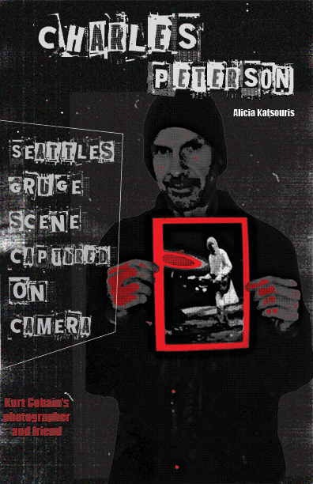
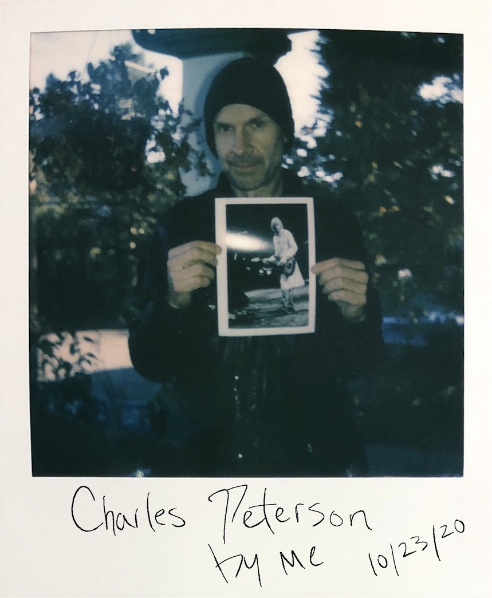
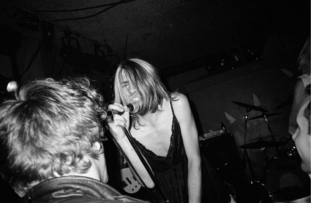
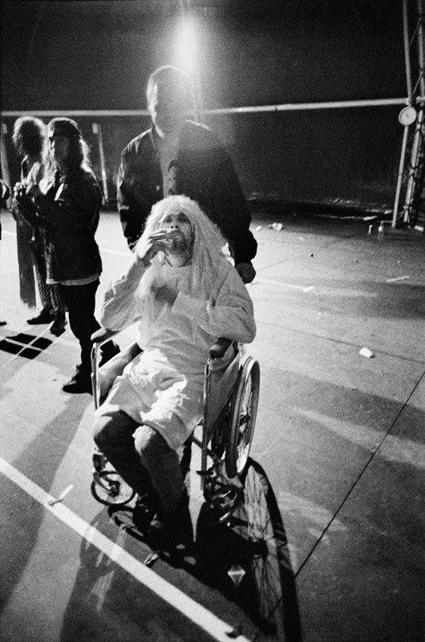

This subpage is a 16-pg booklet for the final project of my Spring 2021 Journalism Design Toolkit class!
I did a 20-pg booklet based on my interview this past October that was recorded on my VHS handycam with known Grunge-Rock photographer of Kurt Cobain and more, Charles Peterson.
Here is the download link for the PDF version: Download (Click here to return to my homepage)



